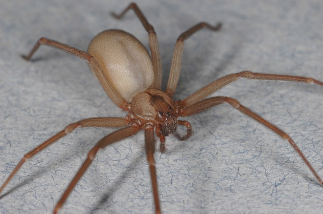
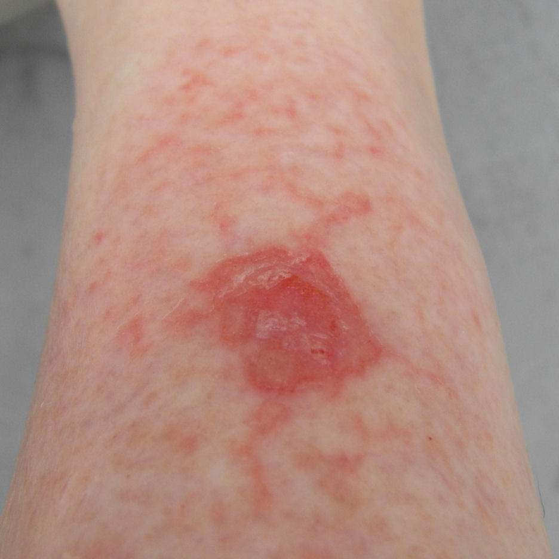
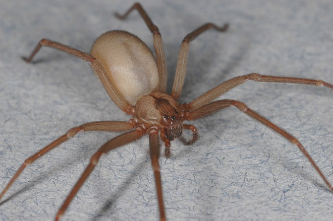
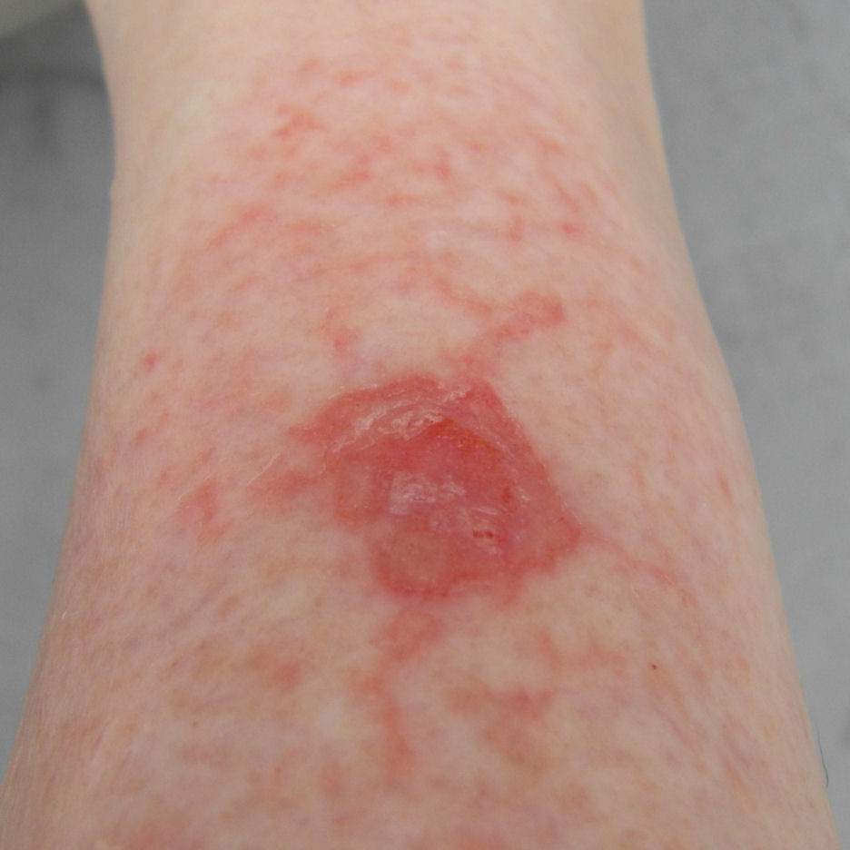
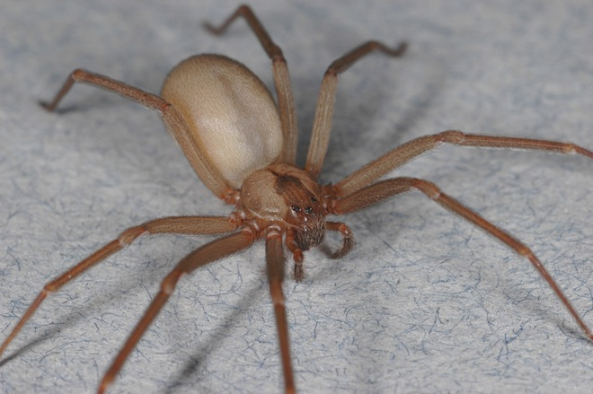
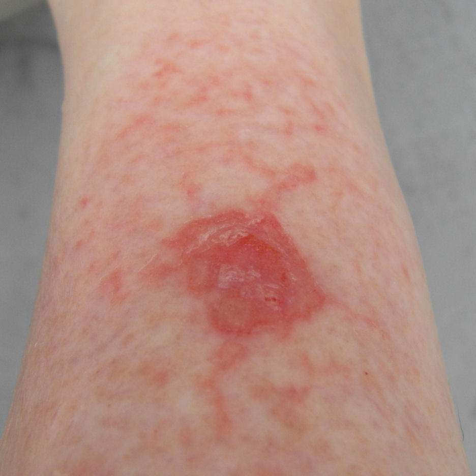
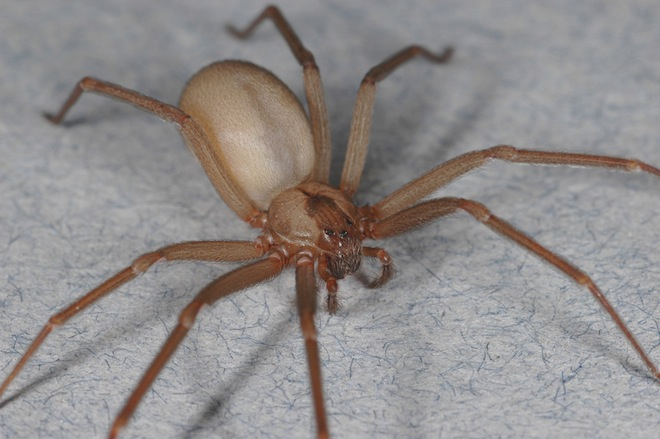
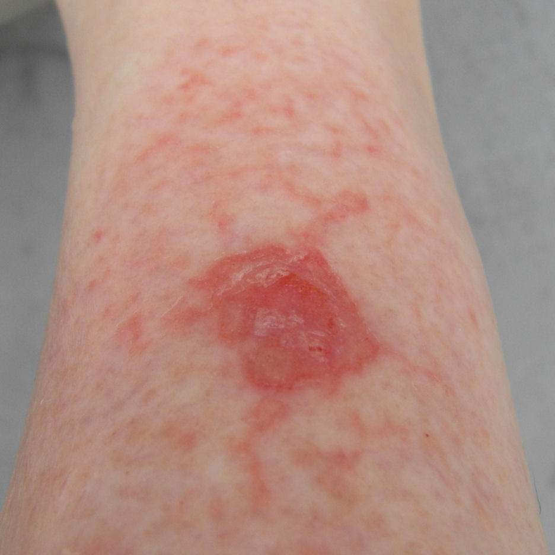

Spider Survival Guide
 



 



Black and yellow garder spider (argiope aurantia): Also known as writing spider or corn spider, these spiders are considered harmless to humans. They normally build their webs in open, sunny areas where they can be sheilded from the wind. They can also be found along the eaves of houses and in tall vegetation where they can secure a web.
Banded Garden Spider (argiope trifasciata): These spiders normally begin to appear in the fall months (early September to late October) when the temperatures begin to drop. This species prefers open fields and prairies. They build their webs close to the ground and prey on small insects that become trapped in their webs.
Longlegged Sac Spider (cheiracanthium mildei): Normally found in the foliage of forests and gardens, but can also be found inside homes. These spiders can bite humans, and they are considered venomous.Their bite can cause localized tissue necrosis (though not nearly as severe as a brown recluse). A bite will typically begin with moderate pain followed by itching. However, these spiders normally do not bite humans
Carolina Wolf Spider (Hogna Carolinensis): Regarded as the largest of the wolf spiders found. Though these spiders are large, the normally do not bite. Typically, they will only bite humans when they feel threatened and cannot escape. Their bites are not considered dangerous to humans, but their bites have be compared to feel of being stung by a bee or a wasp due to the size of their teeth. These spiders are not good at climbing, so they are usually found in grass and under rocks.
Goldenrod Crab Spider(Misumena Vatia):This is the largest and best known flower spider, usually found hunting in goldenrod sprays in Autumn. Their color can be yellow or white depending on which flower they are hunting from. They hunt large insects which are attracted to the bright flowers. They typically are not considered dangerous to humans.
Whitebanded Crab Spider(Misumenoides Formosipes): This spider is known as an ambush predator and does not use webs to catch prey. They are normally found on flowers, under rocks, and in grassy areas where they can feed on other insects. Though these spiders are venomous to their prey, they are not considered dangerous to humans, and are unlikely to bite unless trapped.
Common House Spider(Parasteatoda Tepidariorum): Normally found in homes, these spiders like to build their webs in secluded areas like windows, and behind open doors. These spiders prey on insects that become trapped in their webs, and usually only bite humans when they feel threatened. Typically, their bites are no worse than a bee sting, but in the occasion that venom is used, their bites can become swollen and itchy. Medical attention is not normally needed
Bold Jumper(Phidippus Audax): These spiders have been known to jump anywhere from 10 to 50 times their body length. They prefer open areas where they can stalk prey and do not build webs. Commonly found in fields and grasslands, they can also be found on fences and exterior walls. They normally will not bite humans, and their bites are not considered dangerous if they do.
Longbodied Cellar Spider(Pholcus Phalangioides): Normally found on ceilings in house and caves, and in garages and cellars, these spiders use webs to catch their prey. They feed on insects and even other venomous spiders. Urban legends have often said that they are the most venomous spiders. Science has proven that they hold a very weak venom. These spider's fangs can penetrate human skin, but their bites normally only produce a slight burning sensation for a very short amount of time.
Zebra Jumper(Salticus Scenicus): Typically found on walls of buildings, fences, and rock walls, these spiders are found during the day. They prey on other insects that they can overpower.They are not deemed dangerous to humans
Woodlouse Hunter(Dysdera Crocata): These spiders are normally found in webs hidden in partially decaying wood, though they have also been found in houses.They will notmally only bite humans if they are being handled. Their bite has been know to be less painfull than that of a bee sting and venom typically does not cause any major medical problems

Giant Crab Spider(Olios Giganteus): This spider prefers dry, hot climates. It is able to climb vertically and walks sideways. Though this spider is fairly large, their bite is not dangerous to humans, but does cause pain.
Ant Mimic Spider(Castianeira Longipalpa): Normally found close to the ground or under rocks or logs, but they can also be found inside building. They get their name due to the fact that they will slowly wave their front legs in the air as if mimicing an ants antennae. These spiders are not venomous
Grey Wall Jumper(Menemerus Bivittatus): These spiders are normally foundon walls or tree trunks where they can hunt prey. They normally feed on small flies, but have also been known to feed on bees. This species is not venomous.
Hacklemesh Weaver(Amaurobius Ferox): This species is normally found in houses, but can also be found living under logs and rocks. They build funnel-like webs. They feed on insects and other spiders and even sometimes earthworms. These spiders are not dangerous to humans.
False Black Widow(Steatoda Grossa): This species is also know as cupboard spiders. Though they resemble that of a true black widow, they are alot less dangerous. They have been known to feed on true black widows and other venomous spiders
Hobo Spider(Eratigena Agrestis): These spiders prefer to build their webs on the ground. They can be found in flower beds, under rocks, and in open fields. They will prey on any insects that it can overtake. Though there has been little scientific proof, the bite from this spider is considered not dangerous to humans
Eastern Parson Spider(Herpyllus Eccleslasticus): Though this spiders is commonly found inside the home, and looks a bit rough, their bite is not considered dangerous to humans. There have been a few cases of allergic reactions to their bites.
Southern Black Widow(Latrodectus Mactans): This is a highly venomous species. They are well known for their distinctive red hour glass shape on the female of the species. Their venom is normally not fatal to humans, but can cause sickness. These spiders feed on insects and other spiders. They have also been know to feed on small mice
Brown Recluse(Loxosceles Recluse): Also known as the fiddleback spider, the brown recluse is a venomous spider. The markings on the spider resembles that of a violin, but should not be the only determining factor in identifying this species due to the fact that many other species of spiders carry similar markings. The best way to identify a brown recluse is the eyes. Most spiders have 8 eyes, while the brown recluse only has 6. These spiders build irregular webs in places like woodpiles, sheds, closets, and other dry, non-disturbed areas. They can also be found in shoes, dressers, and work gloves. Bites from a brown recluse are fairly uncommon, and though they are venomous, only around 50% of bites result in illness. Under 40% of bites cause necrosis.
Grass Spider(Agelenopsis spp.): These spiders have nonsticky, sheet-like webs that they weave funnel-like shelters into. Though their webs are not sticky, the grass spider makes up for it by being able to run rapidly. Their bite can cause almost instant paralysis in their prey, however, their chelicerae(teeth) are too small to puncture human skin, therefore are not considered dangerous to humans.